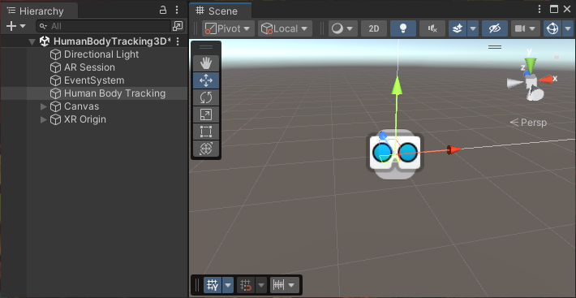

Augmented Reality (AR) involves a new set of design challenges compared to VRVirtual Reality More info
See in Glossary or traditional real-time 3D applications. By definition, an augmented reality app overlays its content on the real world around the user. To place an object in the real world, you must first determine where to place for it. For example, you may want to place a virtual painting on a physical wall. If you place a virtual potted plant, you might want it on a physical table or the floor. An AR app receives information about the world from the user’s device, such as the locations of planar surfaces, the detection of objects, people, faces, and so on; and must decide how to use this information to create a good experience for the user.
When you open a typical AR sceneA Scene contains the environments and menus of your game. Think of each unique Scene file as a unique level. In each Scene, you place your environments, obstacles, and decorations, essentially designing and building your game in pieces. More info
See in Glossary in Unity, you will not find many 3D objectsA 3D GameObject such as a cube, terrain or ragdoll. More info
See in Glossary in the scene or the Hierarchy view. Instead, most GameObjectsThe fundamental object in Unity scenes, which can represent characters, props, scenery, cameras, waypoints, and more. A GameObject’s functionality is defined by the Components attached to it. More info
See in Glossary in the scene define the settings and logic of the app. 3D content is typically created as prefabsAn asset type that allows you to store a GameObject complete with components and properties. The prefab acts as a template from which you can create new object instances in the scene. More info
See in Glossary that are added to the scene at runtime in response to AR-related events.

A typical AR scene in the Unity Editor
A basic AR scene contains the following GameObjects and components:
If you have the XR Interaction Toolkit installed, the XR Origin option for AR applications changes to XR Origin (AR), which adds GameObjects for representing hand-held controllers and the toolkit components to interaction with objects in the scene.
Tip: Use the GameObject > XR menu to add these GameObjects and their associated components to a scene. (You can also open the menu by right-clicking in the Hierarchy window.)
In addition to these session GameObjects, you need the corresponding AR manager component for each type of AR feature that your application uses.
Refer to Set up an XR scene for an overview of how to set up any XR scene.
Refer to the AR Foundation package documentation, including Scene set up for more in-depth information on creating AR applications.
To build AR apps in Unity, you can install the AR Foundation package along with the XR provider plug-insA set of code created outside of Unity that creates functionality in Unity. There are two kinds of plug-ins you can use in Unity: Managed plug-ins (managed .NET assemblies created with tools like Visual Studio) and Native plug-ins (platform-specific native code libraries). More info
See in Glossary for the devices you want to support. To develop AR/MRMixed Reality
See in Glossary apps for the Apple Vision Pro device, you also need the PolySpatial visionOS packages. Unity provides additional packages, including Unity Mars and the XR Interaction Toolkit to make it easier and faster to develop AR experiences.
The AR provider plug-ins supported by Unity include:
Use the XR Plug-in Management system to add and enable one or more of these plug-ins. Refer to XR Project set up for instructions.
Note: Depending on the platform or device, you might need to install additional packages along with OpenXR. For example, to build an AR app for HoloLens 2, you must install the Microsoft’s Mixed Reality OpenXR Plugin.
The AR Foundation package supports AR development in Unity.
AR Foundation enables you to create multiplatform AR apps with Unity. In an AR Foundation project, you choose which AR features to enable by adding the corresponding manager components to your scene. When you build and run your app on an AR device, AR Foundation enables these features using the platform’s native AR SDK, so you can create once and deploy to the world’s leading AR platforms.
A device can be AR-capable without supporting all possible AR features. Available functionality depends on both the device platform and the capabilities of the specific device. For example, ARCore, Google’s AR platform for Android, does not currently support body tracking, so body tracking can’t be used when you build your app for the Android platform. Even on the same platform, capabilities can vary from device to device. For example, a specific device model might support AR through its world-facing camera, but not its user-facing camera.
For more information about AR Foundation, refer to the AR Foundation package documentation.
Augmented and mixed realityMixed Reality (MR) combines its own virtual environment with the user’s real-world environment and allows them to interact with each other.
See in Glossary development for the Apple Vision Pro device relies on a set of packages that implement the Unity PolySpatial architecture on the visionOS platform.
The PolySpatial architecture splits a Unity game or app into two logical pieces: a simulation controller and a presentation view. The simulation controller drives all of the app-specific logic, such as MonoBehaviours and other scripting, UI(User Interface) Allows a user to interact with your application. Unity currently supports three UI systems. More info
See in Glossary behavior, asset management, physics, and so on. Almost all of your game’s behavior is part of the simulation. The presentation view handles both input and output, which includes rendering to the display and other forms of output, such as audio. The view sends input received from the operating system – including pinch gestures and head position – to the simulation for processing each frame. After each simulation step, the view updates the display by rendering pixelsThe smallest unit in a computer image. Pixel size depends on your screen resolution. Pixel lighting is calculated at every screen pixel. More info
See in Glossary to the screen, submitting audio buffers to the system, etc.
On the visionOS platform, the simulation part runs in a Unity Player, while the presentation view is rendered by Apple’s RealityKit. For every visible object in the simulation, a corresponding object exists in the RealityKit scene graph.
Note: PolySpatial is only used for augmented and mixed reality on the Apple Vision Pro. Virtual realityVirtual Reality (VR) immerses users in an artificial 3D world of realistic images and sounds, using a headset and motion tracking. More info
See in Glossary and windowed apps run in a Unity Player that also controls rendering (using the Apple Metal graphics API).
Unity Mars provides purpose-built authoring tools and better workflows for creating AR applications.
Unity Mars requires a compatible license. The Unity Pro, Unity Enterprise, and Unity Industrial Collection plans include Mars. You can also obtain a license for Unity Mars separately if you have a different plan. Refer to Unity Mars for more information.
The Unity XR Interaction Toolkit provides tools for building both AR and VR interactions. The AR functionality provided by the XR Interaction Toolkit includes:
Unity’s AR Mobile and Mixed Reality project templates provide a starting point for augmented and mixed reality development in Unity. These templates configure project settingsA broad collection of settings which allow you to configure how Physics, Audio, Networking, Graphics, Input and many other areas of your project behave. More info
See in Glossary, preinstall the right packages, and include sample scenes with various preconfigured example assets to demonstrate how to set up a project that’s ready for AR or MR. Access the templates through the Unity Hub when you create a new project. Refer to Create a new project for information about creating a project with the template.
For more information about the template assets and how the sample scene is set up, refer to AR Mobile template and Mixed Reality template.